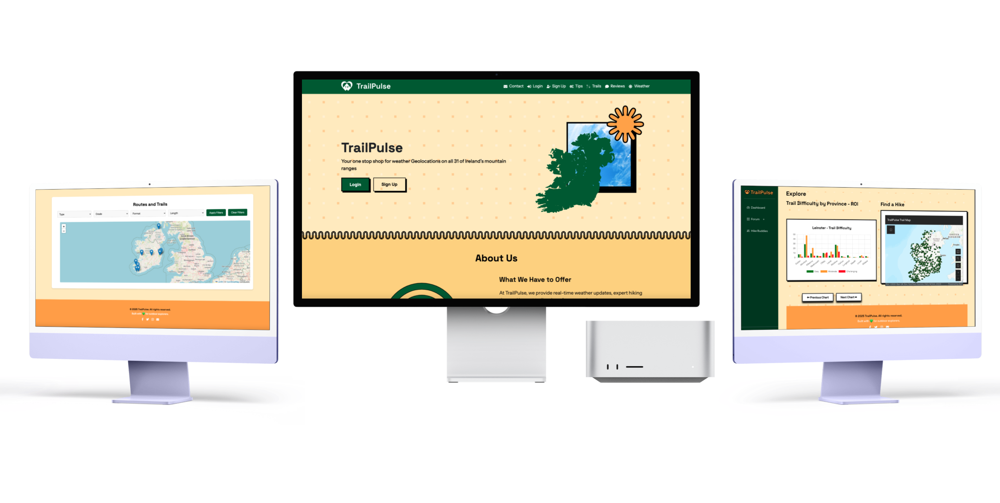
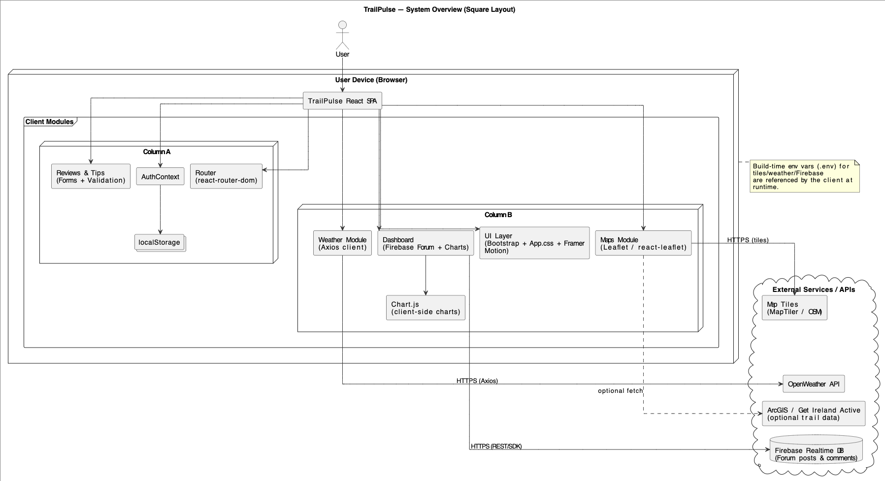
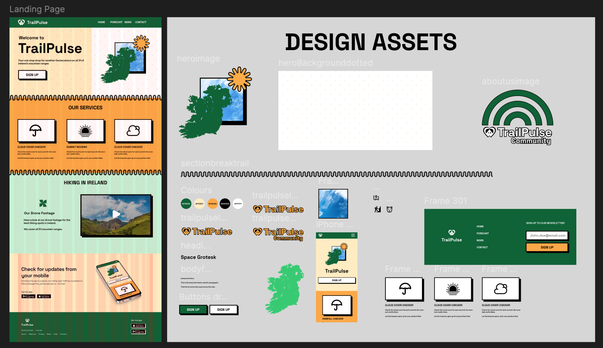

Main Areas I Worked On
- Landing/Home page
- Login and Signup pages
- Dashboard interface
- Dashboard sidebar navigation
- Responsive styling and UI consistency
A focused Irish hiking companion built with React, combining interactive maps, weather insights, and community features for better trail decisions.
Project duration: Mar ’25 – Apr ’25
Role: UX/UI design, frontend development, dashboard, authentication

TrailPulse was created to solve a simple problem: Irish hiking information is often spread across separate websites, generic apps, weather sources, review pages, and trail lists. The app brings trail browsing, mapping, live weather, reviews, tips, and community features into one focused React experience.
The project was developed as a group application, with my main contribution focused on the Landing/Home page, authentication screens, dashboard, dashboard navigation, visual styling, and the logged-in user experience.
TrailPulse is a React single-page app that combines client-side routing, a lightweight UI system, map rendering, live weather lookups, dashboard data visualisation, and community interaction.


The visual direction began in Figma, where the group planned the main routes, page hierarchy, and a consistent outdoor-themed UI. The goal was to make the app feel local, simple, friendly, and easy to scan.
This carousel shows the planning structure behind TrailPulse: information architecture, folder setup, frontend organisation, and backend authentication setup. It explains how the app moved from planned user flows into a working React project.
These short clips show the main TrailPulse interactions, from the public landing experience through to dashboard, reviews, weather, trail browsing, and hiking tips.
The landing page introduces the TrailPulse brand, sets the visual tone, and directs users toward sign-up, login, and the main public pages.
The dashboard gives logged-in users a more personalised view, with sidebar navigation, forum interaction, charts, and quick access to hiking tools.
The contact page allows users to submit feedback or enquiries, with required form fields and a simple branch/location map section.
The reviews section allows users to read trail feedback and interact with review content through add, edit, and delete style actions.
The weather flow lets users select a trail and then check live weather data, including temperature, wind, sunrise, and sunset conditions.
The trails flow shows how users browse Irish hikes, filter the trail list, view trail cards, and interact with the map.
The tips page gives users quick hiking guidance through card-based content, icons, animations, and short practical advice.
TrailPulse resulted in a working React hiking application that brought together trail content, weather checks, interactive maps, dashboard interaction, reviews, tips, and data visualisations in one connected user experience.
View the repository on Github.